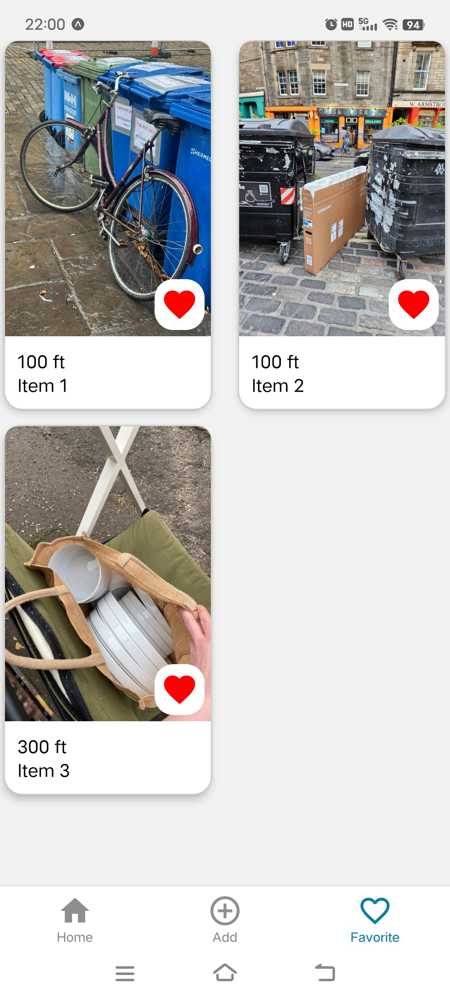

Featured Project
By the Bin: Map-based sharing for sustainable living

Context
An ongoing product I designed and am building to improve how people share and discover free items left on the street. Current solutions are fragmented and unreliable, often leading to low discovery efficiency and uncertainty around item availability.
Brief
Design and develop a geolocation-based mobile app that enables reliable, real-time local sharing of free items.
The challenge was to balance ease of use with real-world constraints such as changing availability, location accuracy, and time-sensitive decision-making.
Outcome
- Defined and prioritised core product flows (discovery, posting, status tracking) based on user behaviour.
- Designed a dual navigation system (map + list) to support different discovery patterns, and introduced real-time status tracking to reduce wasted trips.
- Validated decisions through usability testing, and currently developing the MVP using React Native and Expo, working within technical constraints to prepare for real-world launch.
My role
Designer, user researcher, developer
Tools
- Research & Testing: Semi-structured interviews, in-person usability testing
- Design: Figma (wireframes, prototypes, design system)
- Development: React Native, Expo, Supabase

Opportunity
I start by researching existing sharing platforms. Facebook groups (Edinburgh based group: Meadows share, street bounty) revealed fragmented sharing discussions, Nextdoor (community connection), OLIO (free food sharing) and TooGoodTooGo (surplus food rescue), showed different approaches to connecting sharers with seekers. Current methods for sharing free items are fragmented and inefficient. User either rely on general online platforms like Facebook groups or find items by chance on the street. There is no dedicated, location-aware solution that connects people who have items to share with those actively seeking them in their local area. A specialised resource-sharing application could improve discovery rates and create a more reliable, user-friendly experience for resource sharing.

Research Roadmap
01. User Research & Analysis
I conducted semi-structured interviews to understand how people currently share and discover free items, focusing on both online platforms (e.g. Facebook groups) and real-world street discovery. These methods were chosen to capture both digital behaviours and real-world constraints.
The research revealed two distinct pain point journeys: one is based on user experience on existing online platforms (Facebook groups), and another one is based on street finds. Understanding both digital and physical contexts was crucial to designing a comprehensive solution that addressed the full user experience.
User Insight
- Users browse frequently but rarely act due to uncertainty around item availability or casual curiosity.
- Users enjoy to have a regular and quick scanning on what items nearby.
- Enthusiastic users want to quickly see nearby items while they're already out and about.
- Real-time relevance is critical, outdated information leads to wasted trips.
- Posting must be quick and low-effort to encourage contribution
- Sharing items feels rewarding, users enjoy giving and seeing others benefit.
- Users are flexible about item quality, but not about reliability
These insights reframed the problem from “improving browsing” to “reducing uncertainty and enabling confident decision-making”.

User Journey with Pain Point (online)

User Journey with Pain Point (street discovery)
02. Design
I began by mapping out users' basic actions and creating user flows to understand navigation paths through the app. This helped me identify all necessary key functionalities, screens and plan the app architecture. Key user journeys included: discovering items via map or list view, posting new finds, collecting items, and gallery for checking item history and profile page for user setting and user contribution. This planning phase ensured every screen had a clear purpose tied to user needs identified in research.

User Flow Draft/App Structure

Basic User Flow
Design Solutions
- Dual Navigation (map + list views)
- Real-time status tracking
- Streamlined posting flow
Pain point: Users had varying preferences for discovering items, some users prefer spatial exploration, others want quick scanning, list is accessible to screen reader.
Solution:I chose a hybrid system despite added complexity, as discovery is the core product value.
Trace-off: increased UI complexity
Decision: default to map view, with quick toggle to list
Pain point: Users often encountered unavailable items, leading to wasted trips and frustration.
Solution: Implemented status tracking system that users can mark items as 'collected' or 'unavailable' to reduce uncertainty.
Impact: Reduces wasted trips and manages user expectations around availability.
Trade-off: relied on user updates
Validation: users consistently checked availability before deciding to travel.
Pain point: Sharing items needed to be effortless to encourage community participation.
Solution: I minimised required inputs to make sharing quick and effortless, informed by analysing existing posting behaviours and how users describe locations.
Impact: Encourages more users to share finds, building community engagement.
Trade-off: less structured data

By analysing posting patterns across existing platforms, I identified that effective posts consistently combine street names, nearby landmarks, and visual cues. This informed the design of the posting flow, which balances minimal input with sufficient location context to ensure items remain easy to find.
Sketching
With screen planning complete, I developed low-fidelity wireframes and prototypes to establish information architecture and navigation patterns.

Sketching & Wireframing

Style Guide
Branding
I approached branding as an iterative process rather than a fixed starting point. While designing high-fidelity screens in Figma, I gradually refined visual elements, colors, typography, icons, logo, it allows the brand identity to emerge from functional design needs.

High-fidelity Prototyping
In Figma, I developed high-fidelity prototypes with complete visual design, interactive states, and micro-interactions. While usability testing, users get in a clickable, interactive prototype, therefore users provided deeper insights and detailed feedback on usability and UX design.
03. Usability Testing
I wrote test script and prepared some task-based scenarios to let users to complete with using the high-fidelity prototype. During the process, I identified usability issues and pain points, validated some of my assumptions, then iterated on the design to improve user experience based on testing insights.
All sessions were conducted in person, allowing me to observe user behaviour closely and follow up on any hesitation or confusion in real-time.
Insights
- Users can't find any scenarios to view item history so the gallery feature didn't fully align with their needs.
- Posting was easy and required minimal effort.
- Partial item collection introduced confusion due to unclear states.
Iteration
- Removed gallery feature replaced by 'Favourite' screen to track item status.
- Simplified status handling to reduce cognitive load
- I intentionally deferred solving partial collection, as it introduces significant UX and technical complexity.
- Instead, I prioritised launching a simpler MVP to validate real-world behaviour before addressing edge cases.

04. Learning and Next
This project reinforced the importance of prioritising real user behaviour over feature completeness. Rather than solving all edge cases upfront, I focused on defining a clear MVP that supports core user needs and can be validated in real-world usage. I am currently developing the MVP using React Native and Expo, making design decisions under technical constraints such as real-time updates and location handling.
Next, I will iterate on key flows based on real user feedback and behaviour (e.g. successful collection rate). From a technical perspective, I plan to explore a local-first approach to support posting in low or no network conditions, ensuring users can still upload items in real-world, on-the-go scenarios.

Currently I'm working on developing favourite screen on React native Expo